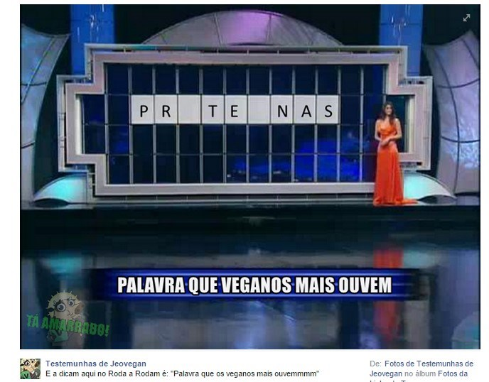

Costuma-se pensar que vegetarianos comem somente saladas sem gosto e sem tempero, porém essa é uma imagem errada. Vegetarianos comem CEREAIS, FRUTAS, LEGUMES e qualquer outro alimento que venha das plantas, além de ALGAS e COGUMELOS.
E as proteínas?
Carnes NÃO são únicas fontes de proteínas, todos os aminoácidos importantes para produzir proteínas no seu corpo podem ser obtidos de vegetais, o Ministério da Saúde do Brasil já reconheceu o vegetarianismo como uma forma completa e saudável de se alimentar. Há somente um nutriente que não podemos encontrar abundantemente na dieta vegetariana: a vitamina B12, essa é produzida por bactérias e cianobactérias e pode ser suplementada na dieta vegetariana estrita (vegana), enquanto que na alimentação ovo-lacto-vegetariana existem ainda duas fontes ricas em vitamina B12, os ovos e o queijo.